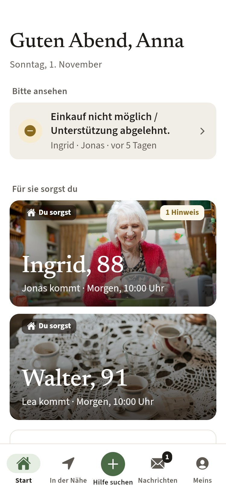
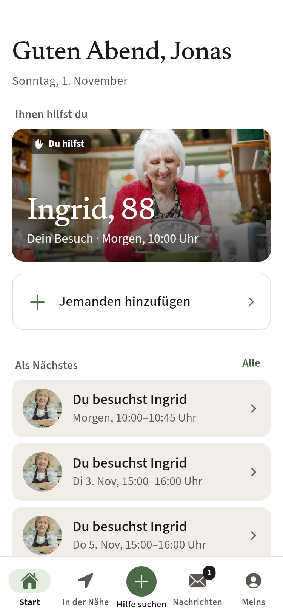
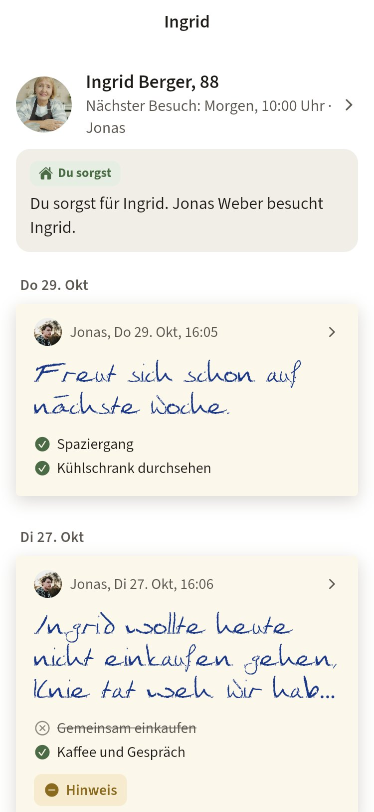

CareCircle
Jemand ist da, auch wenn du es nicht sein kannst.
Eine App, mit der Familien Alltagshilfe für ältere Angehörige organisieren – mit immer denselben, geprüften Helfern aus der Nachbarschaft. Und wer will, hilft in derselben App selbst.
App jetzt öffnenLäuft direkt im Browser, auf iPhone und Android. Nichts installieren, kein Konto. Tipp: über „Teilen › Zum Home-Bildschirm“ wird daraus ein App-Symbol.
Android-App herunterladen (20 MB)Nur Android. Nach dem Download die Datei öffnen und einmal „Aus dieser Quelle installieren“ erlauben.



5-Minuten-Rundgang
- Die App startet als Anna. Sie sorgt für ihre Mutter Ingrid und ihren Onkel Walter.
- Karte Ingrid antippen: ihre Woche, wer kommt, Notfallnummern.
- Unten In der Nähe: Menschen, die Hilfe suchen. „Karl-Heinz“ antippen.
- Unten + Hilfe suchen: eine Anfrage für Ingrid einstellen.
- Unten Nachrichten: die Zettel der Helfer, je Person.
- Meins › Andere Person ausprobieren › Jonas Weber: dieselbe App aus Sicht eines Helfers.
Die drei Zeichen an jeder Person
Was mich interessiert
- Verstehst du nach einer Minute, wofür die App ist?
- Ist klar, wer „deine Leute“ sind und wem du hilfst?
- Wo bist du hängen geblieben?
- Was ist zu viel – Text, Knöpfe, Seiten?
- Würdest du das für deine Eltern oder Großeltern nutzen? Was fehlt?
- Würdest du selbst als Helfer mitmachen?
- Gesamtnote 1–10.